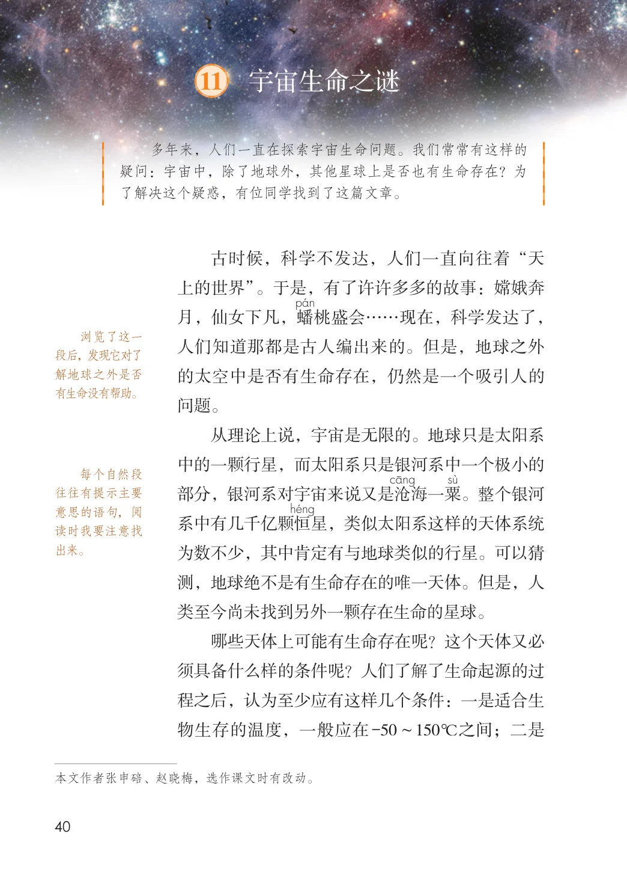
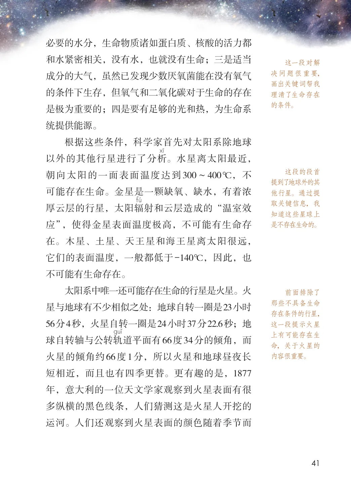
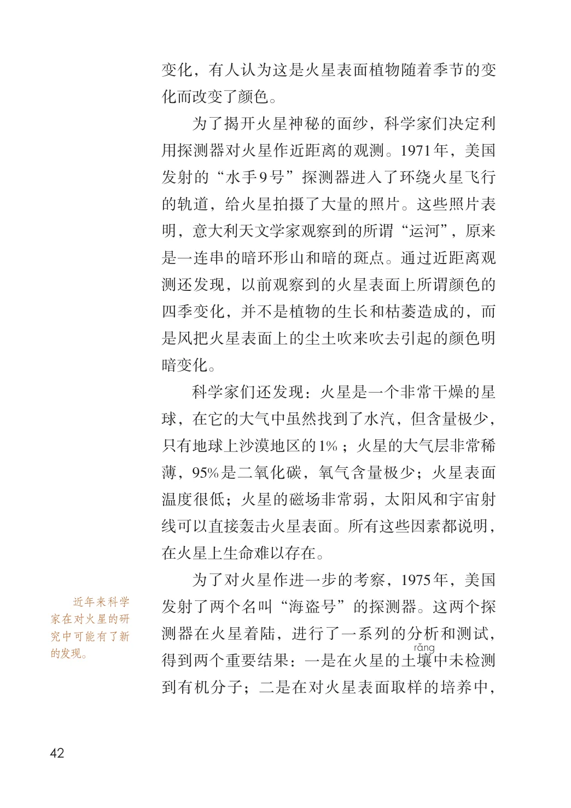
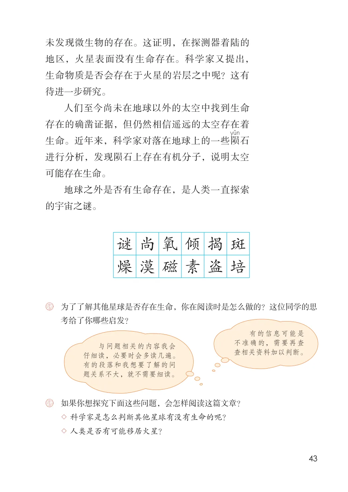

第三单元 · 第 11 课
宇宙生命之谜
文字内容 PDF 第 45 页
多年来，人们一直在探索宇宙生命问题。我们常常有这样的疑问：宇宙中，除了地球外，其他星球上是否也有生命存在？为了解决这个疑惑，有位同学找到了这篇文章。
古时候，科学不发达，人们一直向往着“天
上的世界”。于是，有了许许多多的故事：嫦娥奔
月，仙女下凡，蟠桃盛会……现在，科学发达了，浏览了这一段后，发现它对了解地球之外是否有生命没有帮助。
人们知道那都是古人编出来的。但是，地球之外
的太空中是否有生命存在，仍然是一个吸引人的
问题。
从理论上说，宇宙是无限的。地球只是太阳系
中的一颗行星，而太阳系只是银河系中一个极小的每个自然段往往有提示主要意思的语句，阅读时我要注意找出来。
部分，银河系对宇宙来说又是沧海一粟。整个银河
系中有几千亿颗恒星，类似太阳系这样的天体系统
为数不少，其中肯定有与地球类似的行星。可以猜
测，地球绝不是有生命存在的唯一天体。但是，人
类至今尚未找到另外一颗存在生命的星球。
哪些天体上可能有生命存在呢？这个天体又必
须具备什么样的条件呢？人们了解了生命起源的过
程之后，认为至少应有这样几个条件：一是适合生
物生存的温度，一般应在-50～150℃之间；二是
文字内容 PDF 第 46 页
必要的水分，生命物质诸如蛋白质、核酸的活力都和水紧密相关，没有水，也就没有生命；三是适当
这一段对解决问题很重要，画出关键词帮我理清了生命存在的条件。成分的大气，虽然已发现少数厌氧菌能在没有氧气的条件下生存，但氧气和二氧化碳对于生命的存在是极为重要的；四是要有足够的光和热，为生命系统提供能源。
根据这些条件，科学家首先对太阳系除地球以外的其他行星进行了分析。水星离太阳最近，
这段的段首提到了地球外的其他行星。通过提取关键信息，我知道这些星球上是不存在生命的。朝向太阳的一面表面温度达到300～400℃，不可能存在生命。金星是一颗缺氧、缺水，有着浓厚云层的行星，太阳辐射和云层造成的“温室效应”，使得金星表面温度极高，不可能有生命存在。木星、土星、天王星和海王星离太阳很远，它们的表面温度，一般都低于-140℃，因此，也不可能有生命存在。
太阳系中唯一还可能存在生命的行星是火星。火
前面排除了那些不具备生命存在条件的行星，这一段提示火星上有可能存在生命，关于火星的内容很重要。星与地球有不少相似之处：地球自转一圈是23小时56分4秒，火星自转一圈是24小时37分22.6秒；地球自转轴与公转轨道平面有66度34分的倾角，而火星的倾角约66度1分，所以火星和地球昼夜长短相近，而且也有四季更替。更有趣的是，1877年，意大利的一位天文学家观察到火星表面有很多纵横的黑色线条，人们猜测这是火星人开挖的运河。人们还观察到火星表面的颜色随着季节而
文字内容 PDF 第 47 页
变化，有人认为这是火星表面植物随着季节的变
化而改变了颜色。
为了揭开火星神秘的面纱，科学家们决定利
用探测器对火星作近距离的观测。1971年，美国
发射的“水手9 号”探测器进入了环绕火星飞行
的轨道，给火星拍摄了大量的照片。这些照片表
明，意大利天文学家观察到的所谓“运河”，原来
是一连串的暗环形山和暗的斑点。通过近距离观
测还发现，以前观察到的火星表面上所谓颜色的
四季变化，并不是植物的生长和枯萎造成的，而
是风把火星表面上的尘土吹来吹去引起的颜色明
暗变化。
科学家们还发现：火星是一个非常干燥的星
球，在它的大气中虽然找到了水汽，但含量极少，
只有地球上沙漠地区的1% ；火星的大气层非常稀
薄，95% 是二氧化碳，氧气含量极少；火星表面
温度很低；火星的磁场非常弱，太阳风和宇宙射
线可以直接轰击火星表面。所有这些因素都说明，
在火星上生命难以存在。
为了对火星作进一步的考察，1975年，美国近年来科学家在对火星的研究中可能有了新的发现。
发射了两个名叫“海盗号”的探测器。这两个探
测器在火星着陆，进行了一系列的分析和测试，
得到两个重要结果：一是在火星的土壤中未检测
到有机分子；二是在对火星表面取样的培养中，
文字内容 PDF 第 48 页
未发现微生物的存在。这证明，在探测器着陆的地区，火星表面没有生命存在。科学家又提出，生命物质是否会存在于火星的岩层之中呢？这有待进一步研究。
人们至今尚未在地球以外的太空中找到生命存在的确凿证据，但仍然相信遥远的太空存在着生命。近年来，科学家对落在地球上的一些陨石进行分析，发现陨石上存在有机分子，说明太空可能存在生命。
地球之外是否有生命存在，是人类一直探索的宇宙之谜。为了了解其他星球是否存在生命，你在阅读时是怎么做的？这位同学的思
考给了你哪些启发？
有的信息可能是不准确的，需要再查查相关资料加以判断。与问题相关的内容我会仔细读，必要时会多读几遍。有的段落和我想要了解的问题关系不大，就不需要细读。如果你想探究下面这些问题，会怎样阅读这篇文章？
生字与词语
课后练习
- ◇ 科学家是怎么判断其他星球有没有生命的呢？
- ◇ 人类是否有可能移居火星？
原版对照
原书页面与全部插图
点击图片可查看大图。



